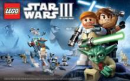
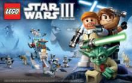

Udover Legoklodser har Lego-koncernen også lanceret en del andre produkter. Dette tæller bl.a. tøjmærket LEGOwear, LEGO Brætspil samt en lang række ting med "LEGO knopper" som eksempelvis madkasser og salt & peber sæt.
|  |  |
 |
Udover Legoklodser har Lego-koncernen også lanceret en del andre produkter. Dette tæller bl.a. tøjmærket LEGOwear, LEGO Brætspil samt en lang række ting med "LEGO knopper" som eksempelvis madkasser og salt & peber sæt.
|  | |
|
Derudover er der også blevet udgivet en lang række computerspil, racerspil, spil bygget over licenstemaer som f.eks.
Dette tæller bl.a.:
LEGO's officielle hjemmeside var første gang online i 2000, men har siden da undergået store forandringer. I dag tæller den udover oversigt over nuværende produkter også online butik, spil, filmsekvenser og Pick a Brick, hvor man kan bestille enkelte klodser uden at købe hele sæt.
LEGO driver i alt 106 Lego Stores spredt i Nordamerika og Europa. Disse butikker sælger udelukkende produkter produceret af LEGO. De fordeler sig således: 64 i USA, ni i Storbritannien, ti i Tyskland, fire i Canada og to i Danmark.
Lego Mindstorms serien består af software og hardware til at lave brugerdefinerede, programmerbare robotter. De inkluderer en intelligent klods computer der kontrollere systemet, et sæt modulære sensorer og motorer, og LEGO-dele fra Lego Technic-serien, sådan at der kan skabes mekaniske systemer.

Hardwaren og softwaren i Mindstorms Robotics Invention System-sættet har rødder i den programmerbare klods der blev lavet hos MIT Media Lab. Denne klods blev programmeret i Brick Logo. Det første visuelle programmeringsmiljø blev kaldt LEGOsheets, da det blev skabt af University of Colorado i 1994, baseret på AgentSheets.